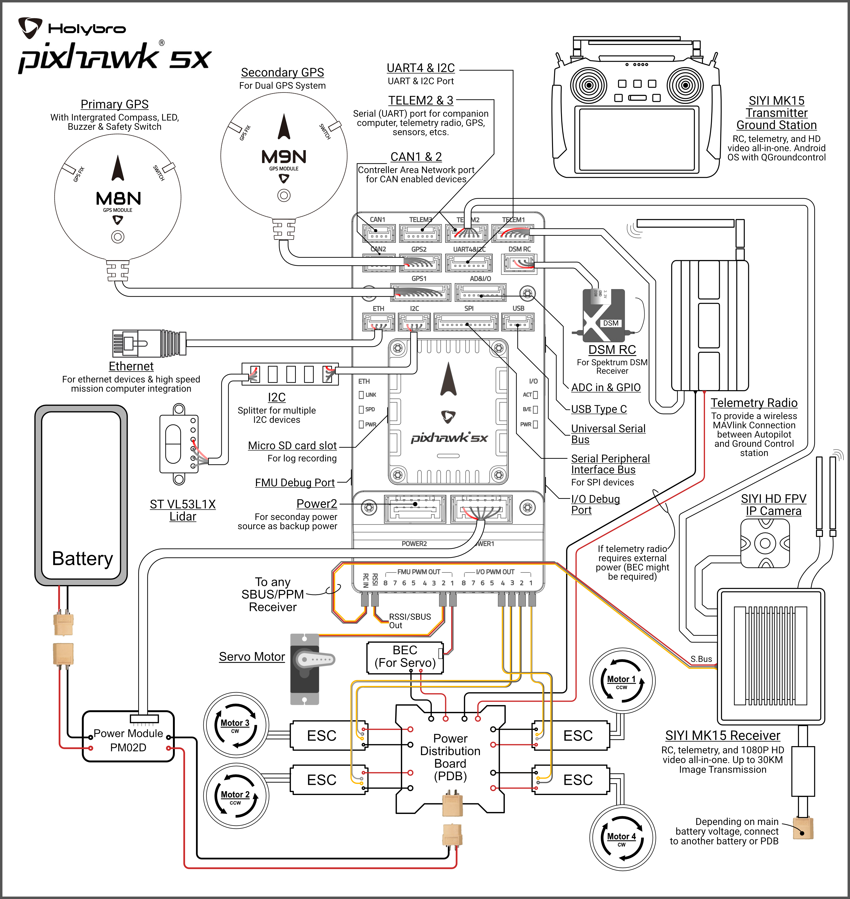
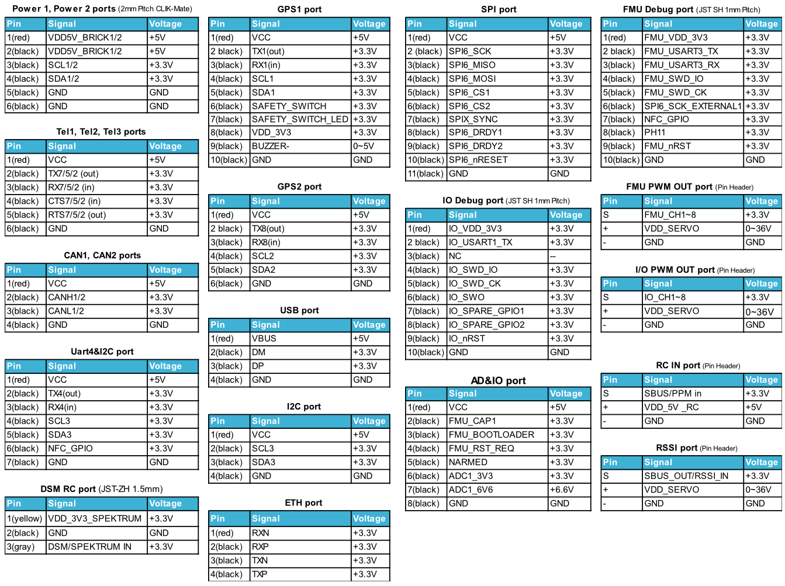

Pixhawk 5X Flight Controller¶
Pixhawk 5X® is the latest update to the successful family of Pixhawk® autopilots made by Holybro, featuring vibration isolation of IMUs, triple redundant IMUs, double redundant barometers on separate buses, IMU heating, and integrated Ethernet for high speed connections to companion computers.

Where To Buy¶
The Pixhawk5X autopilot is sold by Holybro
Features¶
- Processors
STM32F765: 32 Bit Arm® Cortex®-M7, 216MHz, 2MB memory, 512KB RAM
IO Processor: STM32F100: 32 Bit Arm® Cortex®-M3, 24MHz, 8KB SRAM
- On-board Sensors
Accel/Gyro: ICM-20649
Accel/Gyro: ICM-42688P
Accel/Gyro: ICM-20602
Magnetometer: BMM150
Barometer: 2x BMP388
- Interfaces
16- PWM servo outputs
R/C input for Spektrum / DSM
Dedicated R/C input for PPM and S.Bus input
Dedicated analog / PWM RSSI input and S.Bus output
- 4 general purpose serial ports
3 with full flow control
1 with separate 1.5A current limit
1 with I2C and additional GPIO line for external NFC reader
- 2 GPS ports
1 full GPS & Safety Switch Port
1 basic GPS port
1 I2C port
1 Ethernet port,100Mbps
- 1 SPI bus
2 chip select lines
2 data-ready lines
1 SPI SYNC line
1 SPI reset line
- 2 CAN Buses for CAN peripheral
CAN Bus has individual silent controls or ESC RX-MUX control
2 Power input ports with SMBus
- 1 AD & IO port
2 additional analog input, one 3.3V and one 6.6V max input
1 PWM/Capture input
2 Dedicated debug and GPIO lines
- Voltage Ratings
Max input voltage: 6V
USB Power Input: 4.75~5.25V
Servo Rail Input: 0~36V
- Dimensions
Flight Controller Module: 38.8 x 31.8 x 14.6mm
Standard Baseboard: 52.4 x 103.4 x 16.7mm
- Weight
Flight Controller Module: 23g
Standard Baseboard: 51g
- Other Characteristics
Operating & storage temperature: -40 ~ 85°c
Typical Wiring Diagram¶
{kind=link}
Note
duplicated RC control and telemetry solutions are shown. Duplicate systems are not usually used.
UART Mapping¶
SERIAL0 -> USB
SERIAL1 -> UART7 (Telem1) RTS/CTS pins (DMA enabled)
SERIAL2 -> UART5 (Telem2) RTS/CTS pins (DMA enabled)
SERIAL3 -> USART1 (GPS1)
SERIAL4 -> UART8 (GPS2)
SERIAL5 -> UART2 (Telem3) RTS/CTS pins (DMA enabled)
SERIAL6 -> UART4 (USER)
SERIAL7 -> USART3 (Debug)
SERIAL9 -> USB (SLCAN)
RC Input¶
The RCIN pin, which by default is mapped to a timer input, can be used for all ArduPilot supported receiver protocols, except CRSF/ELRS and SRXL2 which require a true UART connection. However, FPort, when connected in this manner, will only provide RC without telemetry.
To allow CRSF and embedded telemetry available in Fport, CRSF, and SRXL2 receivers, a full UART, such as SERIAL5 (UART2) would need to be used for receiver connections. Below are setups using UART2. SERIAL5_PROTOCOL should be set to “23”.
FPort would require SERIAL5_OPTIONS be set to “15”.
CRSF would require SERIAL5_OPTIONS be set to “0”.
SRXL2 would require SERIAL5_OPTIONS be set to “4” and connects only the UART2 TX pin.
Any UART can be used for RC system connections in ArduPilot also, and is compatible with all protocols except PPM. See Radio Control Systems for details.
PWM Output¶
The Pixhawk5x supports up to 16 PWM outputs. All 16 outputs support all normal PWM output formats. All FMU outputs except 7 and 8 ,also support DShot.
The 8 FMU PWM outputs are in 4 groups:
PWM 1, 2, 3 and 4 in group1
PWM 5 and 6 in group2
PWM 7 and 8 in group3
FMU outputs within the same group need to use the same output rate and protocol. If any output in a group uses DShot then all channels in that group need to use DShot.
Battery Monitoring¶
The board has 2 dedicated power monitor ports with a 6 pin connector. They are intended for use with the I2C power monitor supplied with the autopilot.
Note
do not try to use the Mission Planner SETUP->Optional Hardware->Battery Monitor tab to setup the power monitors. The parameters needed for their operation are already setup by default:
BATT_MONITOR = 21
BATT_I2C_BUS = 1
BATT_I2C_ADDR = 65
Compass¶
The Pixhawk5x has a built-in BMM150 compass. Due to potential interference the autopilot is usually used with an external I2C compass as part of a GPS/Compass combination.
GPIOs¶
The 8 FMU PWM outputs can be used as GPIOs (relays, buttons, RPM etc). To use them you need to set the output’s SERVOx_FUNCTION to -1. See GPIOs page for more information.
The numbering of the GPIOs for PIN variables in ArduPilot is:
PWM1 50
PWM2 51
PWM3 52
PWM4 53
PWM5 54
PWM6 55
PWM7 56
PWM8 57
FMU_CAP1 58
FMU_CAP2 59
NFC_GPIO 60
Analog inputs¶
The Pixhawk5X has 3 analog inputs, one 6V tolerant and two 3.3V tolerant
ADC Pin10 -> ADC 6.6V Sense
ADC Pin13 -> ADC 3.3V Sense
Analog 3.3V RSSI input pin = 103
Connectors¶
Unless noted otherwise all connectors are JST GH
{kind=link}
Loading Firmware¶
The board comes pre-installed with an ArduPilot compatible bootloader, allowing the loading of xxxxxx.apj firmware files with any ArduPilot compatible ground station.
Firmware for this board can be found here in sub-folders labeled “Pixhawk5X”.
Layout and Dimensions¶

[copywiki destination=”plane,copter,rover,blimp”]